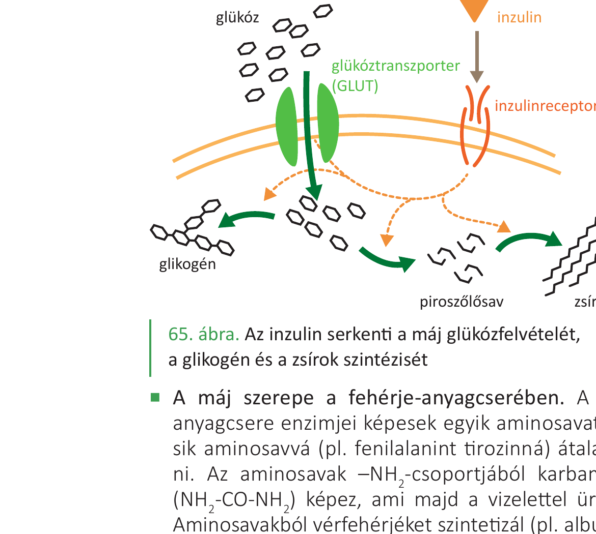
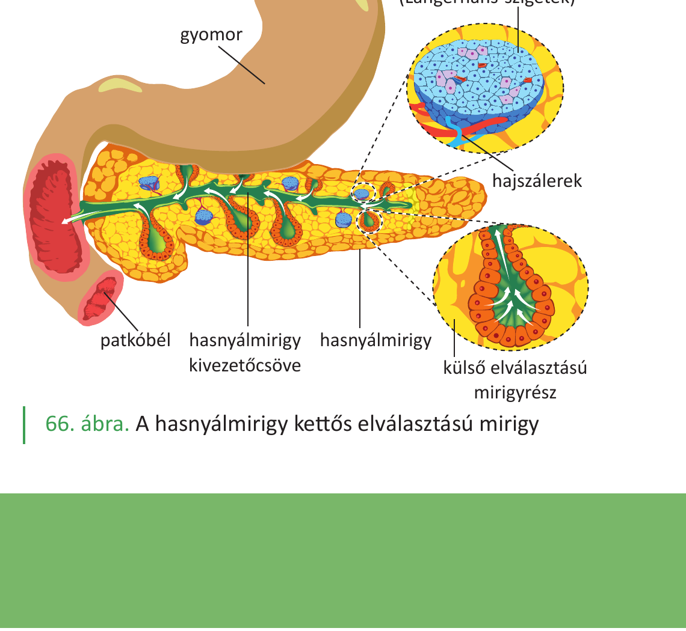

31. Cukoranyagcsere, cukorbetegség¶
A szervezet a szénhidrátokat (főként glükózt) gyors energiaforrásként használja: fajlagos energiatartalmuk 17 kJ/g. A vér glükózszintje (vércukorszint) szűk határok között mozog, és a homeosztázis része. Ezt a szabályozást két hasnyálmirigy-hormon végzi (inzulin, glukagon). Ha a szabályozás zavart szenved, cukorbetegség alakul ki.
A vércukorszint és normálértéke¶
A vér glükózszintje az egészséges emberben deciliterenként 70–110 mg (3,9–6,1 mmol/l) között van (egyes források a normál éhgyomri érték felső határát 100 mg/dl-ben, azaz 5,6 mmol/l-ben adják meg). Ez étkezések között, éhgyomri állapotban érvényes érték.
Étkezés után átmenetileg megemelkedik, majd a szabályozó hormonok hatására visszaáll a normál tartományba.
A cukoranyagcsere lépései¶
1. Felszívás után — a máj központi szerepe¶
A vékonybélben felszívódott glükóz a májkapuvénán át elsőként a májba jut. A máj a központi raktár és szabályozó szerv:
- Glikogénraktározás (glikogenezis): a vérből felvett glükózból glikogént állít elő (inzulin hatására). A májsejtek és a vázizomsejtek glikogén formájában tárolnak szénhidrátot.
- Glikogénlebontás (glikogenolízis): a glikogénből glükózt szabadít fel (adrenalin, glukagon hatására), és a véráramba juttatja — vércukorszint-emelés.
- Glukoneogenezis: nem szénhidrátból (pl. tejsavból) is képes glükózt előállítani. A vázizomban anaerob lebontásból keletkező tejsav a vérbe kerül, és a máj újra glükózzá alakítja → ez a Cori-kör.
- Zsírrá alakítás: a többletglükózból zsírokat is előállít (inzulinhatás).
2. Felhasználás a sejtekben¶
A vér a glükózt a szövetekig szállítja. A sejtekbe jutva:
- Biológiai oxidáció (mitokondriumban): teljes lebomlás CO₂-vé és H₂O-vé, sok ATP szabadul fel,
- Glikogénné alakulás (raktározás, főleg máj és vázizom),
- Zsírrá alakulás (zsírszövet),
- Erjedés (vázizomban oxigénhiányos állapotban): tejsavvá bomlik, kevés ATP-vel.
Fontos megkülönböztetés: az idegsejtek glükózfelvétele inzulinfüggetlen — ellentétben az inzulinérzékeny szövetekkel (izom, zsír, máj). Az agy folyamatosan glükózt igényel, attól függetlenül, hogy van-e elegendő inzulin.
A vércukorszint hormonális szabályozása¶
A szabályozást a hasnyálmirigy belső elválasztású részei, a Langerhans-szigetek sejtjei végzik. A hasnyálmirigy kettős elválasztású mirigy: külső elválasztású része termeli a hasnyálat (emésztőenzimekkel), a belső elválasztású részek elszórtan találhatók a szervben, kis sejtcsoportokat (Langerhans-szigeteket) alkotva. Számuk emberben kb. 1 millió.
A szigetek kétféle hormon-termelő sejtből állnak:
| Sejt | Hormon | Hatás |
|---|---|---|
| β-sejt (kisebb, világosabb) | inzulin | csökkenti a vércukorszintet, ha a normáltartomány felett van |
| α-sejt (nagyobb, sötétebbre festődő) | glukagon | emeli a vércukorszintet, ha a normáltartomány alatt van |
A Langerhans-szigetek vérellátása igen gazdag (a sejtek a vérbe ürítik váladékukat).
Az inzulin hatása¶
Az inzulin akkor választódik el, ha emelkedik a vércukorszint (étkezés után). Hatására:
- a máj és az izomsejtek felveszik a glükózt (a sejtek glükóztranszporterét aktiválja az inzulinreceptoron át),
- a glükózt glikogénné alakítja (glikogenezis),
- serkenti a zsírképzést (zsírszintézis a többletből).
Az inzulin tehát a „bő idők" hormonja — eltárolja a felesleget.
A glukagon hatása¶
A glukagon akkor választódik el, ha csökken a vércukorszint (pl. étkezések között, éhezéskor). Hatására:
- a máj glikogéntartalma lebomlik glükózzá (glikogenolízis),
- ez a glükóz a véráramba kerül → vércukorszint-emelkedés.
A glukagon a „szűkös idők" hormonja — előhívja a tartalékot.
További szabályozók¶
- Adrenalin (mellékvesevelő-hormon): stressz, fizikai megerőltetés esetén szintén emeli a vércukorszintet.
- A hipotalamusz kontrollálja az éhségérzetet és a táplálkozási viselkedést.
A glikémiás index¶
Egy adott élelmiszer vércukorszintre gyakorolt hatását a glikémiás indexszel (0–100 közötti skála) jellemezzük. Értékét két tényező határozza meg:
- az élelmiszer szénhidráttartalmának emészthetősége,
- a felszabaduló egyszerű cukrok felszívódásának sebessége.
A magas indexű tápanyagok gyorsan és nagymértékben megemelik a vércukrot — emiatt az inzulinelválasztás jelentősen fokozódik. Mivel az inzulin csökkenti a vércukrot, étkezést követően 1-2 órával hipoglikémia alakulhat ki, ami erős éhségérzetet kelt.
A cukorbetegség (diabetes mellitus)¶
A cukorbetegség akkor áll fenn, ha a szervezet nem tudja megfelelően szabályozni a vércukorszintet — vagy az inzulinhiány, vagy az inzulinrezisztencia miatt.
Típusai¶
- 1. típusú (I-es típusú) cukorbetegség: a hasnyálmirigy β-sejtjei elpusztulnak (autoimmun folyamat), ezért abszolút inzulinhiány alakul ki. Általában fiatalkorban kezdődik. Kezelése: inzulin pótlása (injekció).
- 2. típusú (II-es típusú) cukorbetegség: a sejtek inzulinrezisztenssé válnak — az inzulin termelődik, de a sejtek nem reagálnak rá megfelelően. Gyakran felnőttkorban alakul ki, elhízás, mozgásszegény életmód jelentős kockázati tényező. Kezelése: életmódváltás, gyógyszerek, súlyos esetben inzulin.
A cukorbetegség diagnózisa¶
- Éhgyomri vércukorszint mérése: cukorbetegek esetén 126 mg/dl (7 mmol/l) felett van.
- Cukortűrési teszt: 75 g szőlőcukor elfogyasztása után 2 órával, ha a vércukorszint 200 mg/dl (11,1 mmol/l) felett van, cukorbaj áll fenn.
A cukorbetegség következményei¶
Ha a vércukorszint tartósan magas (hyperglikémia), számos szövődmény léphet fel:
- Vesekárosodás: a normál esetben a vesében aktív transzporttal visszaszívódó glükóz megjelenik a vizeletben (innen ered a betegség régi neve: „cukorbaj" = a vizelet cukortartalma).
- Szem- és érrendszeri károsodások (érelmeszesedés fokozódása).
- Idegrendszeri tünetek.
- Növekszik a szív- és érrendszeri betegségek és az agyi infarktus kockázata.
Megelőzés¶
Az elhízás megelőzése kritikus fontosságú a 2. típusú cukorbetegség, a szív- és érrendszeri betegségek megelőzésében. Ehhez fontos: kiegyensúlyozott étrend (alacsony glikémiás indexű ételek), rendszeres testmozgás, megfelelő tápanyagarány.
Ábrák¶

A glükóz a máj glükóztranszporterén (GLUT) keresztül jut a májsejtbe. Az inzulin az inzulinreceptorhoz kötődve serkenti ezt a folyamatot. A májban a glükóz glikogénné (raktározás), piroszőlősavvá (lebontás) vagy zsírsavakká (átalakítás) alakulhat.

A hasnyálmirigy két részből áll: a külső elválasztású mirigyrész (a hasnyálat termeli, és a patkóbél felé üríti a kivezetőcsövön át), és a belső elválasztású sejtcsoportok (Langerhans-szigetek) — ezek hormonokat (inzulin, glukagon) termelnek, melyek a vérbe kerülnek a hajszálereken át.
Az anyag a 2. tankönyv 47, 48, 168, 169. oldalain található.